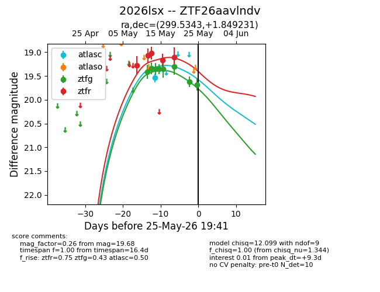
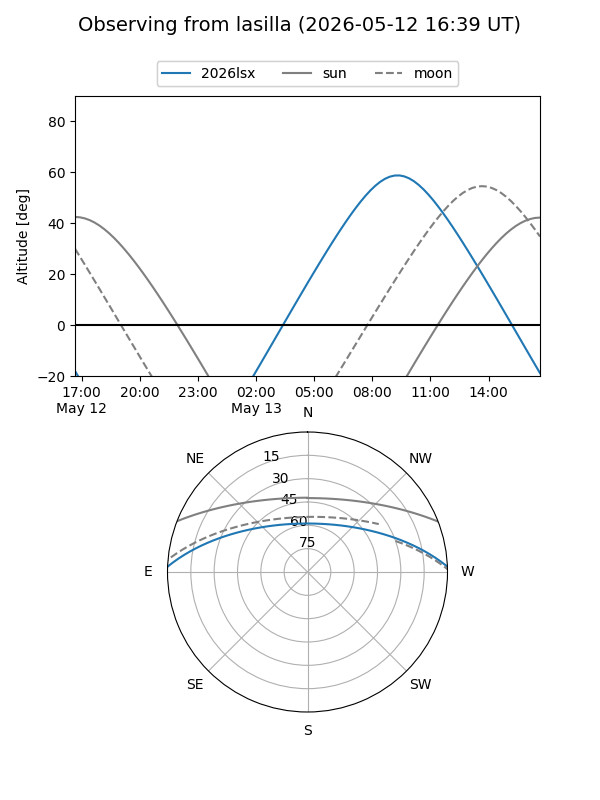
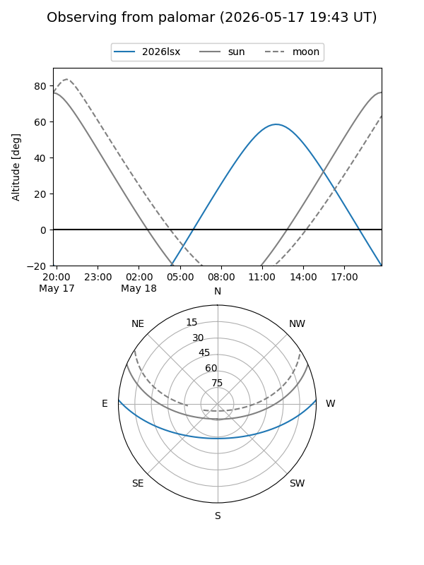
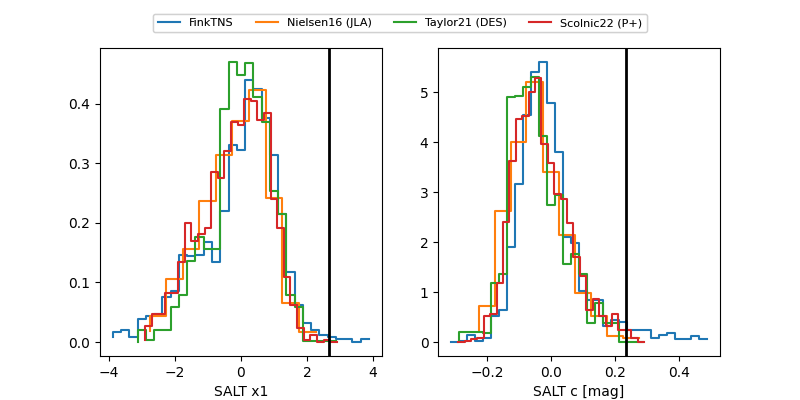

2026lsx
Target 2026lsx at 2026-05-25 19:43
Aliases and brokers:
lsst-FINK: link
lsst-Lasair: link
lsst-ALeRCE: link
ztf-FINK: link
ztf-Lasair: link
ztf-ALeRCE: link
TNS: link
YSE: link
alt names
ZTF26aavlndv (ztf,fink_ztf)
2026lsx (tns,yse)
Coordinates:
equatorial (ra, dec) = 299.5343,+1.84923
equatorial (HMS+DMS) = 19:58:08.22,+01:50:57.23
galactic (l, b) = (42.3893,-13.91752)
Flags:
Photometry:
last atlasc=19.54, ztfg=19.68, ztfr=19.10
1 atlasc, 8 ztfg, 5 ztfr detections
Lightcurve

Visibility


Additional plots
